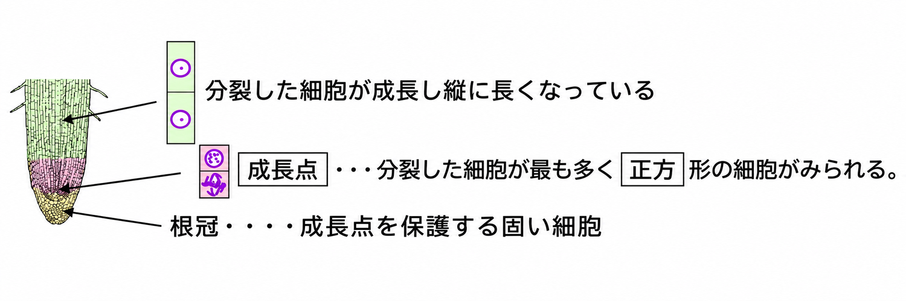
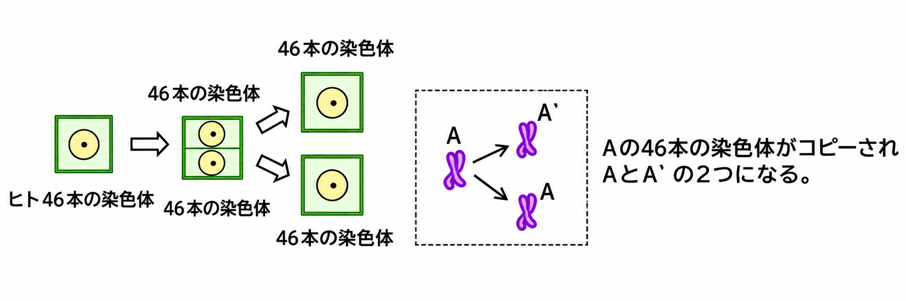
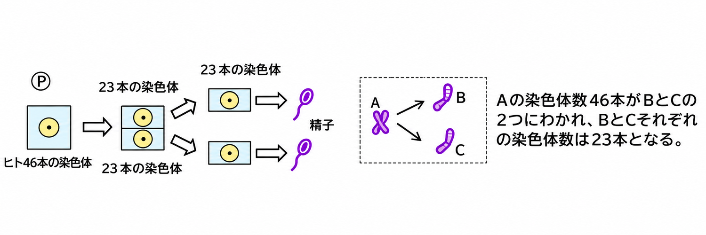
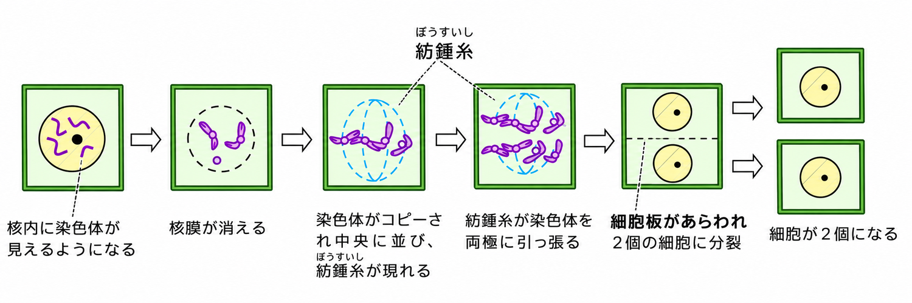
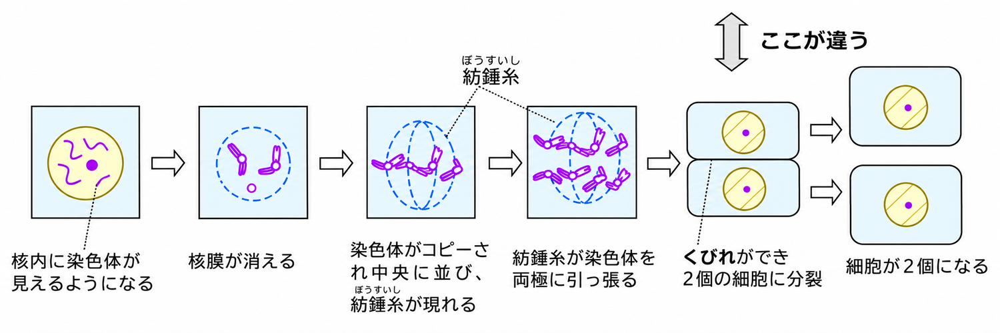

生物のからだは、たくさんの細胞でできています。1つの細胞が2つに分かれ、それぞれが成長してふえることを細胞分裂といいます。
タマネギの根で細胞分裂を観察するときは、細胞分裂がもっともさかんな、根の先端の成長点を使います。

成長点では、分裂した細胞がいちばん多く、小さな正方形の細胞が見られます。その上の部分では、分裂した細胞が成長して縦に長くなっています。先端にある根冠は、成長点を保護する固い細胞です。
▶ 観察のしかた
①成長点の部分を切り取り、約60℃のうすい塩酸につけます。これは、細胞をうすくはがしやすくするためです。（切り取ったままだと細胞が重なっていて観察しにくいのです。）
②細胞は透明で染色体が見えにくいので、酢酸カーミン液（または酢酸オルセイン液）を加えて、核の染色体を赤色に染めます。
- 細胞分裂……1つの細胞が2つに分かれ、それぞれが成長してふえること
- 観察には、細胞分裂がさかんな根の先端の「成長点」を使う
- うすい塩酸（約60℃）……細胞をうすくはがしやすくするため
- 酢酸カーミン液（酢酸オルセイン液）……染色体を赤色に染める

🏆 ベストタイム
細胞分裂には2つの種類があります。
皮膚や胃など、からだをつくる細胞が、同じ細胞にコピーされて分裂するのが体細胞分裂です。染色体の数は変わりません。ヒトの細胞では、46本の染色体がそのままコピーされ、同じ細胞が2つできます。

精子や卵のように、生殖細胞をつくるときには、染色体がコピーされず、もとの細胞の半分の数になる減数分裂が起こります。ヒトの場合、46本の染色体が23本ずつに分かれて、精子や卵ができます。

- 体細胞分裂……染色体の数が変わらない分裂（例：皮膚・胃などの細胞）
- 減数分裂……染色体の数が半分になる分裂（例：精子・卵）
- ヒトの染色体……体細胞は46本、精子・卵は23本
🏆 ベストタイム
体細胞分裂のようすを、順番に見ていきましょう。植物も動物も、前半は同じです。

①核の中に染色体が見えるようになる → ②核膜が消える → ③染色体がコピーされて中央に並び、紡錘糸が現れる → ④紡錘糸が染色体を両極（両はし）に引っ張る → ⑤2個の細胞に分かれる → ⑥細胞が2個になる、という順番です。
⑤のところが、植物と動物でちがいます。植物細胞では細胞板があらわれて2個の細胞に分かれ、動物細胞ではくびれができて2個の細胞に分かれます。

- 分裂の順……染色体が見える→核膜が消える→染色体が中央に並ぶ（紡錘糸）→両極に引っ張る→2個の細胞
- 植物細胞……細胞板があらわれて2個に分かれる
- 動物細胞……くびれができて2個に分かれる
①紡錘糸が染色体を両極に引っ張る ②核の中に染色体が見えるようになる ③細胞が2個になる ④核膜が消える